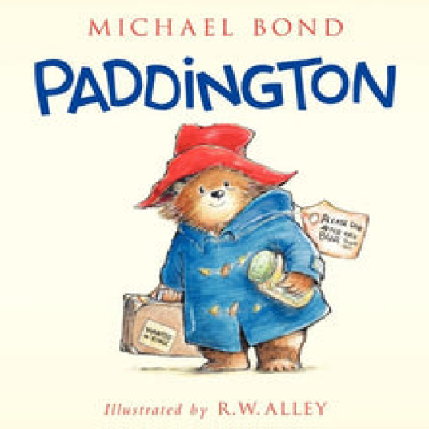
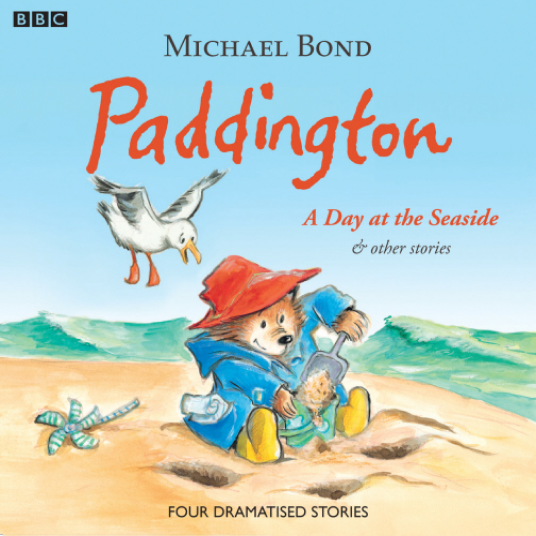
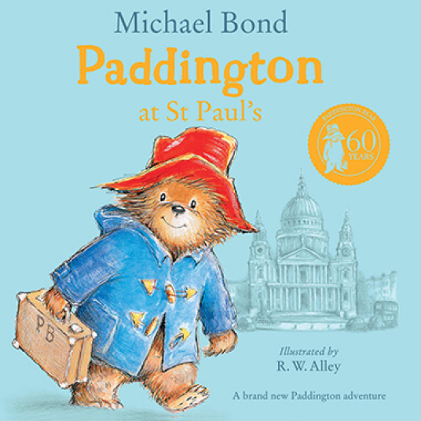
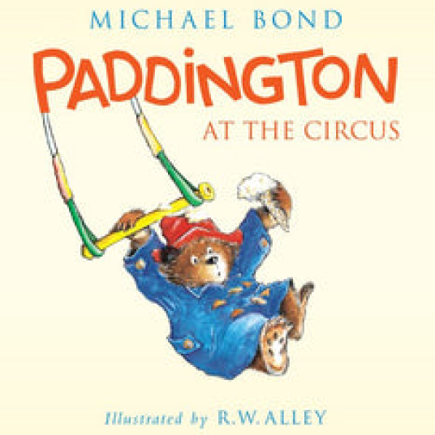
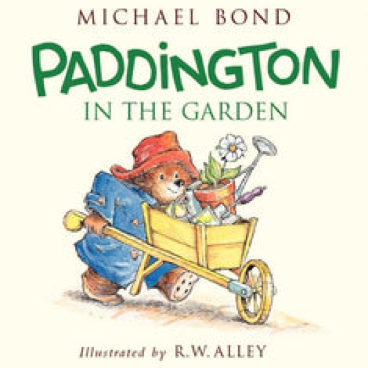
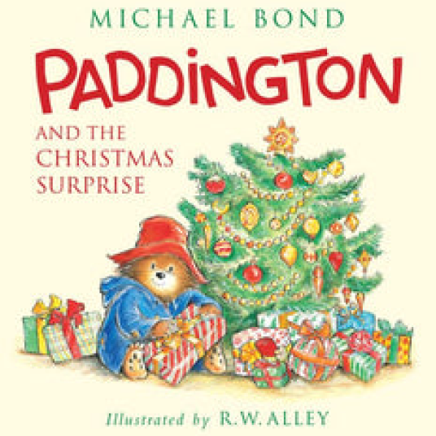

Meet this adorable Bear called Paddington from Darkest Peru to London
Although Paddington now lives in London,
England, he originally came from Peru where
he was brought up by his Aunt Lucy after he
was orphaned following an earthquake when
he was just a few weeks old.
When Aunt Lucy went to live in the Home for
Retired Bears in Lima, she decided to send him
to England to live. After teaching him to speak
perfect English, Aunt Lucy arranged for him to
stow away in a ship’s lifeboat.
Meet the Beloved Brown Family and neighbors
Dive into the Delightful World of Paddington Bear Books
-

Paddington
Here are four more dramatised stories starring everyone's favourite bear, introduced by Michael Hordern, who narrated the original BBC TV series. Included are 'Paddington: a Day at the Seaside', 'Pantomime Time', 'A Picnic on the River', and 'Paddington's Christmas.'
-

Paddington A Day At The Seaside
Over fifty years ago, a small bear set out on the adventure of a lifetime. With nothing but a suitcase, several jars of marmalade, and a label around his neck that read, "Please look after this bear. Thank you," he crossed the ocean heading for England.
-

Paddington at St. Paul's
When Mr. Gruber takes Paddington on a special outing to St. Paul's Cathedral, there is one surprise after another. And the biggest surprise of all comes when Paddington is mistaken for a choir bear and suddenly finds himself taking part in a most unusual rehearsal.
-

Paddington at the Circus
The circus comes to town, and Paddington and the Brown family are eager to check out the show. When a trapeze artist swings close by, Paddington becomes a star, just like the clown and acrobats! Paddington's circus debut makes this show a performance to remember.
-

Paddington in the Garden
There is nothing that Paddington Bear loves better than living with the Browns . . . except maybe marmalade! But now Mr. and Mrs. Brown have given him something else to love at number thirty-two Windsor Gardens—his very own garden
-

Paddington and the Christmas Surprise
Christmas is coming, and Paddington has saved just enough money to take the Brown family to Barkridges store to visit Santa's Winter Wonderland. But trouble has a way of finding the lovable bear, so when Paddington decides to lend a helping hand, the whole store is suddenly in chaos.